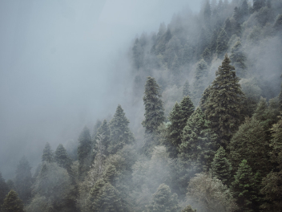
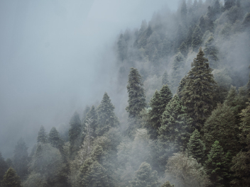
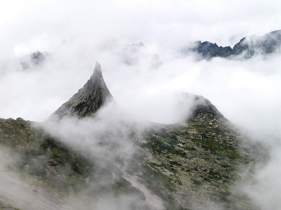
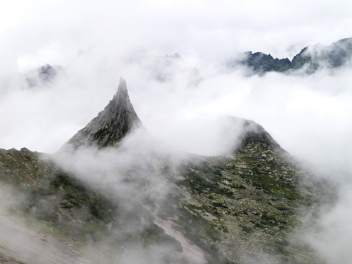

 

Curonian Spit
url
park-kosa.ruHere, in the middle of forests and sand dunes, you can see two the water horizon — the calm Curonian Lagoon on one side and covered with ripples waves of the Baltic Sea on the other. A unique natural area on the edge of the Russian enclave.
The Kaliningrad Region does not end there. For traveler and explorer in the same neighborhood — the westernmost point of Russia, The Baltic Spit — - and the German heritage of placers of small seaside towns. The atmosphere of these places eliminates the hustle and bustle, plunging into the tranquility of nature and the smell a steely, cool sea.